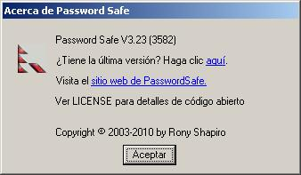

El Menú ayuda da acceso a recursos diversos sobre Password Safe.
Abre este archivo de ayuda.
Abre la pagina de inicio de Password Safeen un explorador.
Esta opción abre un diálogo que muestra el número de versión y el aviso de derechos de autor, así mismo te permite comprobar si hay una versión más moderna de Password Safe disponible. Por seguridad, Password Safe cerrará tu base de datos antes de conectarse a Internet para comprobar si hay una nueva versión.
